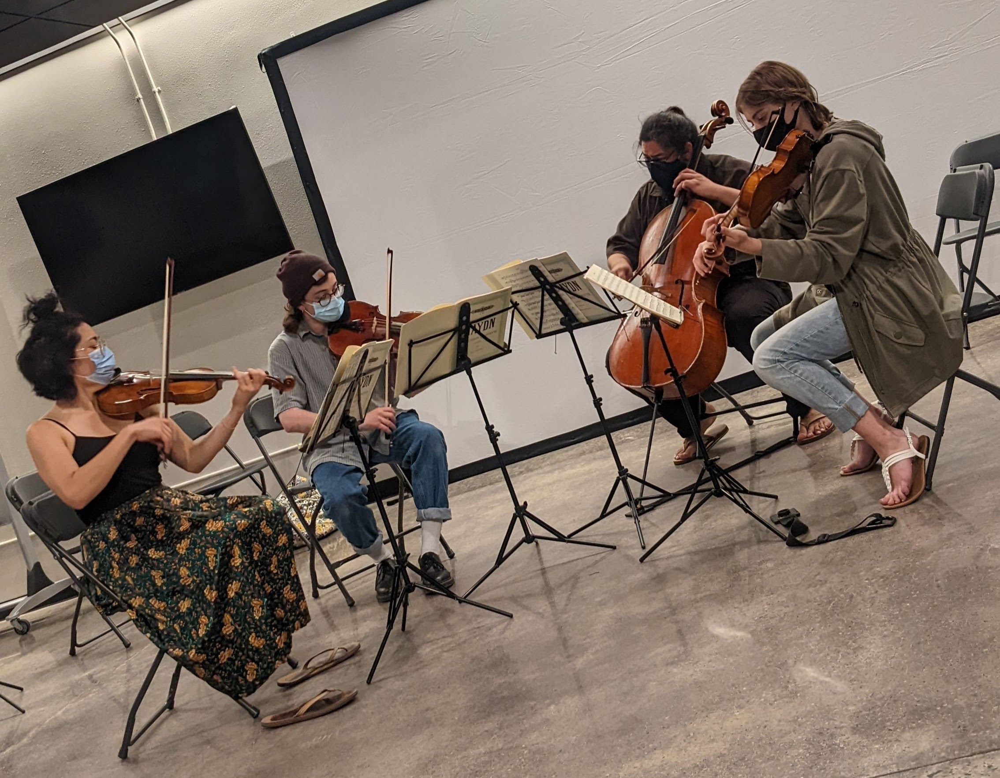
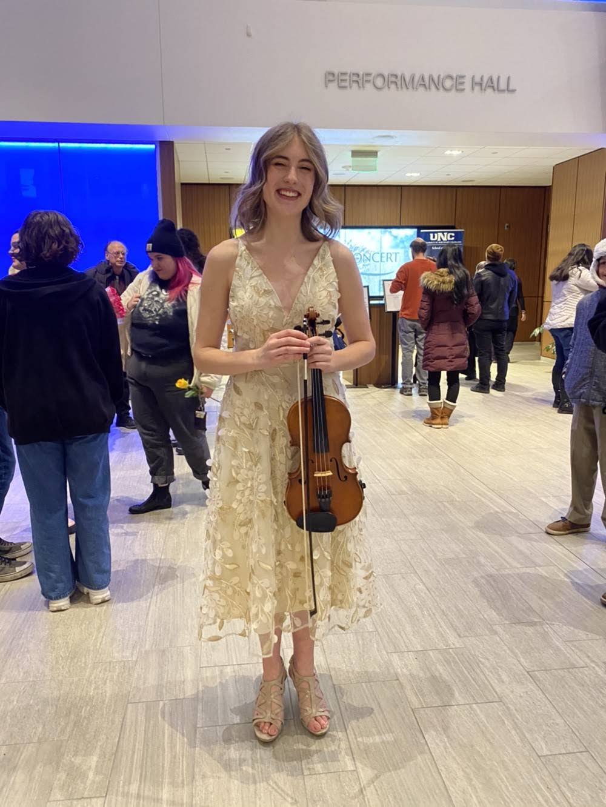
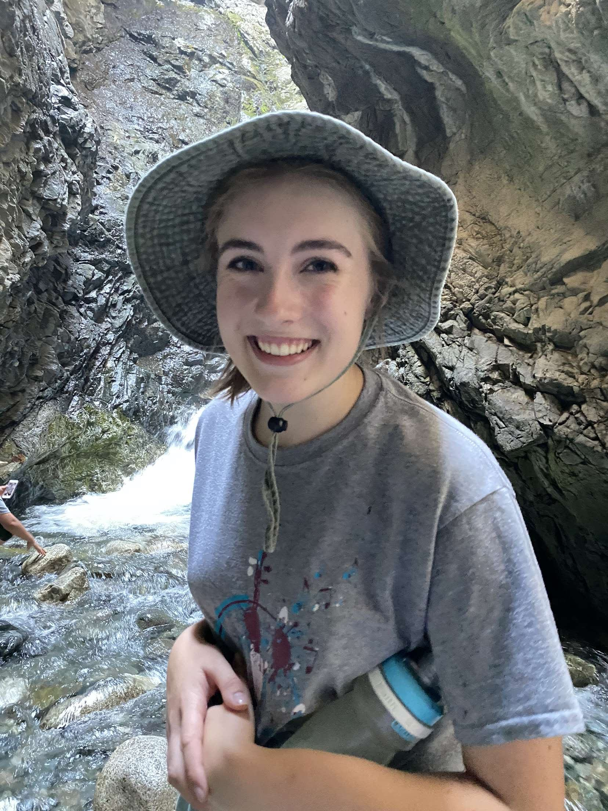

Violinist, Private Instructor


Colette is currently studying violin performance at the University of Northern Colorado, where she is also minoring in French and working towards a certificate in music technology.
Colette’s passion for teaching started when she was 13. At the time, she was a member of the Colorado Youth Symphony Orchestra. Her younger
neighbor, who was also in the symphony, contacted her asking for help with her music. Colette remembers spending over an hour working with her, and loving every minute. She said “It was as if something had suddenly clicked. With every issue
or question that arose, it was like I had a list of solutions from all my teachers throughout the years, and I was able to pick the ones best suited to her and tailor them further. I will always remember how much fun we both had, even though
she was so stressed when we started.” Her neighbor’s mom would go on to rave about this lesson, which she had observed from one room over. Even years later, she would bring up the experience and claim that Colette had a gift. To her
satisfaction, her claims of Colette becoming an instructor one day came to fruition! To this day, Colette still feels energized and enthusiastic after every lesson.
Colette is currently teaching an after-school violin club at Salida Del Sol Academy in Greeley. She also enjoyed being the violin teacher for
their summer camp, where she adapted Andrew Rykes’ Fairytale for the enthusiastic beginners!
Colette’s interest in the violin started at age 8, around the same time she developed a curiosity for French. At age 14, she decided to fly to France alone to stay with a family willing to take her in for nearly 3 months. Some of her favorite
memories include her time with young children and her violin. Often, after practicing, she would open her door to have a pile of children tumble in the room (having been leaning against the door to listen!) She enjoyed helping them try out
her violin, and was overjoyed to hear that one is now studying violin at a school for music and dance in France.

Colette also had the incredible opportunity to be featured as a soloist for a UNC collaboration concert in November of 2022. Accompanied by the UNC orchestra, Colette performed Vaughaun Williams’ The Lark Ascending for the dancers (view a
clip below). A dancer herself, Colette is always overjoyed to collaborate with dancers. She has already booked another concert with the Colorado Dance Collective in April of 2023! (view program below).
Also trained in Celtic fiddle from the age of 8, Colette believes strongly in the power of learning tunes by ear and passing them down. She holds 2nd place from the Scottish Fiddle Competition of Colorado in 2018, and enjoyed masterclasses
from The Nordic Fiddlers Bloc.
Another passion of Colette’s, her love of Chamber music is growing stronger with every experience. She was recently touched by a performance during a summer festival in Green Lake, Wisconsin. “I felt this was a performance the most like a
conversation that I had ever seen. In fact, it was more like a sharing of love, emotions, and humanity than a performance. The artists were sharing parts of themselves words cannot express. It touched me so deeply it still ignites a fire in
my chest, and I
will never forget it.” It was then Colette realized the need for expression and communication through art. She strives to share her humanity with her music, and works
to give students their own experience of emotional expression through their musical journey.
In her free time, Colette also enjoys camping, paddle boarding, dancing, reading, and spending time with her 10 younger siblings!
Upcoming Performances:

"When I saw you come onto the stage to perform, I had a "proud friend" moment. But I had never heard The Lark Ascending before. The emotion you put into the piece left me so moved, I cried for most of the piece, but I felt comfort and joy during a time of such excruciating emotional pain. In a way, your performance was God's way of telling me "It'll be okay, I love you."
-Sumner Grey
(singer, pianist, composer) ig. @sumnerwgreyTeaching:

For information on violin lessons, click the link below to download my lesson policy/contract.
- Parent Recommendation for Violin Lessons with Colette Burch-
- I had the pleasure of hiring Colette Burch a few years ago instruct my daughter with violin lessons. I have always known that Ms. Burch was an accomplished violin musician so we thought why not have her work with my daughter. Ms. Burch went above and beyond with her lessons. She arrived on time with a joy filled spirit and an enthusiasm that was infectious. Ms. Burch was considerate and gave an honest assessment of what Leah’s musical interests were. She was so kind with a gentle direction that truly inspired my daughter to engage and improve.
I highly recommend Colette Burch and we are grateful for the instruction time well spent.
-Mrs. Maloney
Contact Me:
Email:
colette.burch6216@gmail.comInstagram:
@coletteburchFacebook:
https://www.facebook.com/colette.burch.7